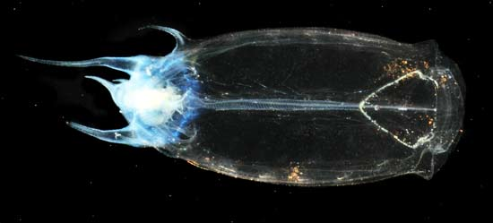
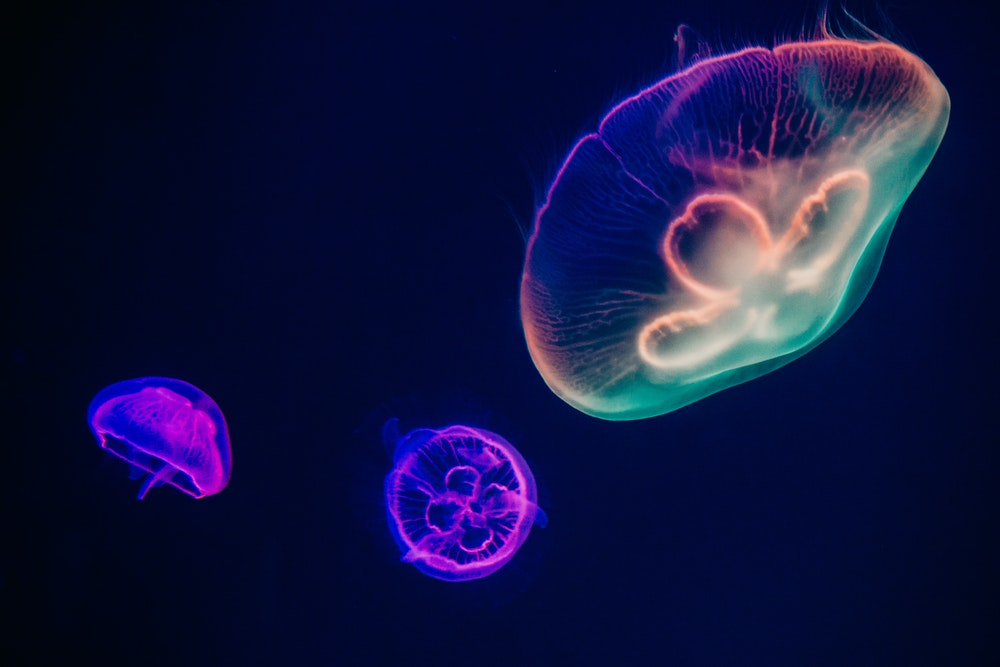
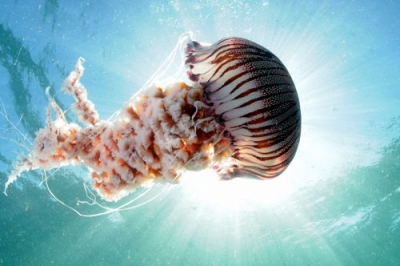
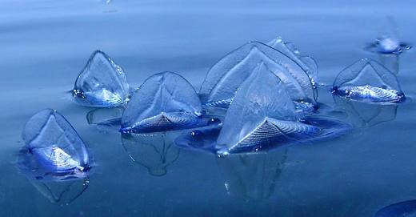
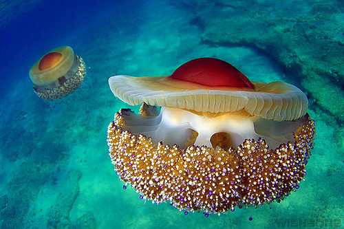

Thalia democraticaje pelagički plaštenjak,nema žalac, hrani se sitnim česticama.

Aurelia aurita je bezopasan za ljude,ima blagi žalac ova se meduza može dotaknuti.

Chrysaora hysoscella Živi u Atlantiku, a može doći u višim geografskim širinama.

Bezopasna je za ljude, ali svejedno je bolje ne dirati ovu meduzu,ima blagi žalac.

Cotylorhiza tuberculata bezopasna je za ljude,ima blagi žalac ali je bolje ne dirati.